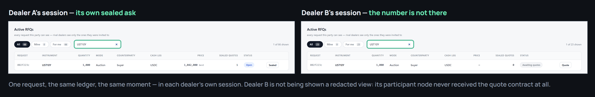
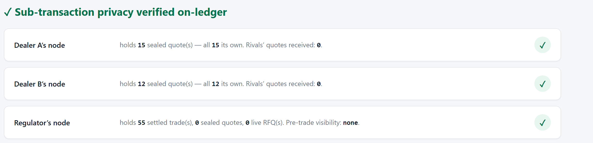

HackCanton Season #2 · Grand Final · 5 August 2026
tirai.
The confidential multi-dealer RFQ / OTC desk, built native on Canton. Sealed quotes, atomic delivery-versus-payment, post-trade audit.
You whisper quotes. The market hears nothing.
Pugar Huda Mantoro · solo · tirai.vercel.app · github.com/PugarHuda/tirai
A bank wants to sell fifty million of bonds. Before it trades, it must ask dealers for a price.
The moment anyone sees you asking,
they know your size and your direction.
The price moves against you before you trade
The two things institutions do today
On a transparent chain your request is a transaction and every competing quote is a transaction. Rivals simply read them. Front-running and adverse selection are structural, not incidental.
A voice broker or a chat room is private — and leaves no record. Six months later you cannot prove to compliance that you got the best price available. Nothing is atomic.
Which is why block trading in 2026
still happens on the telephone.
Tirai gives you both
A buyer asks a chosen dealer panel. The market never sees the enquiry.
Each dealer answers the buyer alone. Rivals never receive the contract.
Quoting locks the dealer's bond. A price is a commitment, not a bluff.
Cheapest ask wins and is paid the runner-up's price. Honest quoting dominates.
Bond and cash move in one transaction. The regulator gets the report.
Three execution rails — reverse-Vickrey auction, direct bilateral OTC, partial fills on both. Multi-instrument baskets settle as one atomic multi-leg trade.
You sign in as one identity and the home screen is the book: every request that party is allowed to see, and nothing else.
Losing quotes are archived — never revealed to anyone
Not hidden by the interface

One request, one ledger, one moment · a contract is delivered only to its signatories and observers
The superpower
| To hide one number | What it costs you |
|---|---|
| A trusted execution enclave | Hardware trust, attestation, encrypted handles to manage |
| Zero-knowledge circuits | Circuits to write and audit, a trusted setup, proving time |
| Threshold encryption | A committee to run, key shares to hold, liveness to guarantee |
| Homomorphic encryption | Every branch computed blind, and the performance that implies |
| Canton | None. Sub-transaction privacy is the ledger model. |
"Dealer B cannot see dealer A's quote" is a
signatory / observer declaration.
Who buys it
Fixed-income and crypto-asset desks at banks, asset managers and prop shops moving $1m–$100m tickets that cannot afford to signal.
Temple, Bron, Console, Canton Loop — they hold the client relationship and the custody; Tirai ships as an embedded app and shares the fee.
Not a payer, but the reason a private chat will not do. Post-trade-only visibility is the middle ground supervisors ask for.
Below a million, leakage is a rounding error.
Above it, leakage is the whole cost.
How it makes money
Built and settling on DevNet. The cut leaves the same atomic transaction as the trade, so if the trade settles the fee is paid — no invoicing, no collection risk. One real settlement: 4,250,000 cleared at 25 bps, 10,625 to the venue, 4,239,375 to the dealer. The rate is still unset: blank charges nothing, and the number comes out of a design-partner conversation.
The intended second line: featured-app markers on every settlement, so a live desk keeps earning from the volume it clears on top of the fee. Not built — there is no marker in the code, and it needs a mainnet app id to mean anything.
Fee on notional means one desk clearing institutional size is a real business — and tokenised bond issuance is the growth curve underneath it.
Collected on DevNet, in test assets · zero revenue · no paying customer · the rate is a partner's call, not mine
Differentiation
| Alternative | The single axis it fails on |
|---|---|
| Public order book / on-chain RFQ | Pre-trade confidentiality. The order is the signal. |
| Voice or chat broker | Provable settlement. Nothing is atomic; best execution is reconstructed from chat logs. |
| Tradeweb / MarketAxess / bank dark pools | The venue itself sees everything. Confidentiality is an operator's promise. |
| Other Canton privacy demos | No mechanism. They show Canton can keep a secret; they do not run a market. |
Private price discovery — with a receipt.
Live on Canton DevNet — verifiable right now
Deployed on HackCanton's own node and the shared 5N validator from the same package, `tirai-desk`, upgraded in place on the validator without stranding a single earlier contract. Hosted read-only desk over live ledger state at tirai.vercel.app.
Honest label: that ledger history was generated by me. It demonstrates the product works — it is not customer traction, and I will not present it as such.
The two proof views
Not a claim — a query, run against the network on demand.
A buyer, or a dealer defending its pricing, discloses a single sealed quote to the regulator. Sixteen attestations prove the clearing price beat every disclosed rival ask.
Confidential pre-trade. Provable post-trade.

Your feedback asked for real external settlement
The cash leg settles in real Canton Coin through the DSO's registry and in real CBTC through the DA Utility Registry that BitSafe issues on. Issuers I do not administer and cannot mint into.
Four reverse-Vickrey, two direct OTC. 60,900 CC moved to the dealers that won them, each bond-against-cash in one transaction.
A faucet grant accepted on-ledger, then spent through the desk: cleared at the Vickrey second price, and hit directly at the ask.
The instrument administrator is the only difference. The rail appears in the desk the day the tokens land, with no release in between.
Nothing in the model is per-asset: cashInstrument is any
{admin, id}, and each registry only differs in where it keeps its off-ledger
choice contexts. The desk's Settlement rails view lists every one it can clear on.
The team
Final-year undergraduate, building solo. Everything on the previous slides is my own work: the ledger model, the deployer, the desk, the tests, and the two registry integrations.
Repo created 22 July. The CIP-0056 settlement leg landed 23 July. Hosted desk live 24 July. Second participant deployed and privacy-verified 26 July. Since the feedback: real Canton Coin and real CBTC settlement on the ledger.
And a written 90-day validation plan with the stop criteria set in advance, because a plan that cannot fail is not a plan.
The desk, driven
Dealer A seals its ask, then the rival's session comes up with no price. Stops itself. Press again to replay.
This page is a still. The film is at tirai.vercel.app/deck (slide 14) and tirai.vercel.app.
A request opened, a dealer's sealed quote, the rival's own session without it, then the privacy verifier and the settlement rails. Screen recording against a live ledger; the only edit is a slow push on the rival's empty price cell.
Tirai — Indonesian for "curtain"
I need one design-partner desk. One hour a week for ninety days — not a purchase order.
tirai.vercel.app · github.com/PugarHuda/tirai · youtu.be/_iHMouFdNA4 · hudapugar@gmail.com